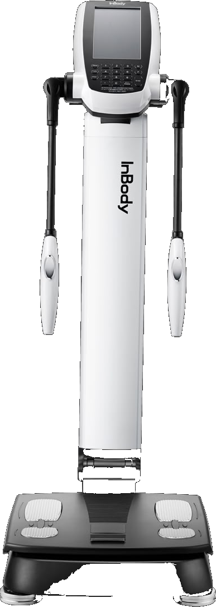

Nutrición y composición corporal · Las Cañitas
Una balanza te dice un número. El InBody te dice cuánto es músculo, cuánto es grasa, cuánto es agua, y dónde.
Un análisis preciso que se traduce en un plan de acción personalizado
Total y por segmento
Porcentaje y grasa visceral
Hidratación y retención
Vitalidad y estado celular

Migueletes 1082 · Las Cañitas, CABA · @nutri.maychu